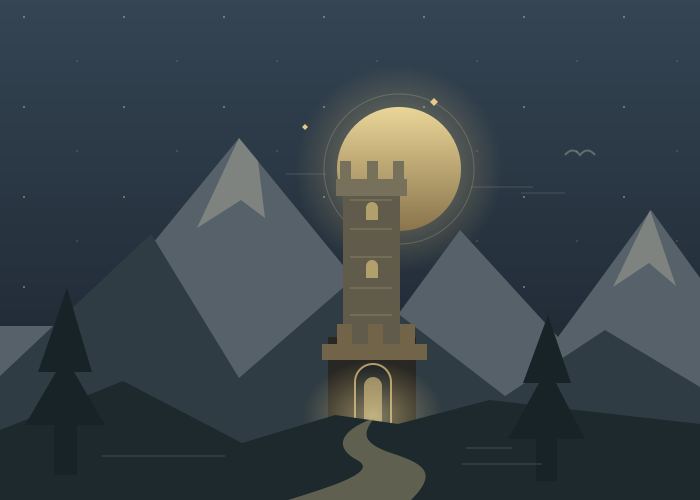

YOUR RETURN TO GIELINOROLD SCHOOL RUNESCAPE
THE WORLD KEPT TURNING.
Welcome back,
adventurer.
New stories. Unfamiliar monsters. One more reason to stay up too late. Find what arrived while you were away.
Find my next adventure ↗
YOUR PERSONAL CATCH-UP
While you were away.
A starting point, not another to-do list.
RuneReturn is an independent fan project. This is a curated selection of major additions, not a complete patch archive. Each entry links to its sources. Prerequisites and drop tables can change; check the linked guide before gearing up.